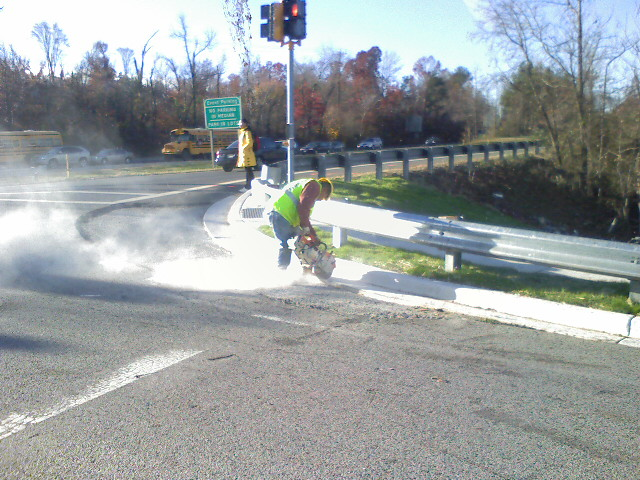

Washington Harbor Xmas Lights
The Christmas lights at the harbor across from my work were shining brilliantly, drawing me in to them on this fridged winter eveining.

The Christmas lights at the harbor across from my work were shining brilliantly, drawing me in to them on this fridged winter eveining.
When a video tells you to blog about it you just have to listen, right?
Hmm, I think he is on to something.
I have a heap of respect for the icon designers out there. These people start with a blank page and after several hours they end with a tiny graphic that communicates a heck of a lot of information. It takes a lot of talent and clever thinking to simplify an idea or concept into an understandable graphic.
Von. R. Glitschka created a step by step walk through detailing the process he uses to design an icon. The zipped download (1.8 Mb) has a set of images from each step with related notes in a separate text file. You can learn a lot about design by studying the processes of others.
More about the Tango icon library can be found at http://tango.freedesktop.org/Tango_Desktop_Project

Taken from my car as I waited at a light in College Park, Maryland. Now I am waiting in traffic on Route 1 South due to road construction.
There is nothing web geeks love more than strutting their thorough knowledge of the subject. Knowing every single HTML 4 element by heart or to have each and every CSS property on the tip of your tongue doesn’t really help you in every day web development; understanding and realizing when to use each is more important.

But all of that goes out the window when it comes to quizzes like How Many HTML Elements Can You Name in 5 Minutes? or How Many CSS Properties Can You Name in 7 Minutes?
Out of the 91 W3C approved HTML 4 elements I identified 44, or 48%, in 5 minutes.
With CSS properties I did a little worse. getting 42 out of a possible 122 in 7 minutes, or 34%. I won’t disclose the simple ones I missed to give you a fair test when you take it. Most of them no one uses anyways!
How many did you get?
All season I have been photographing the University of Maryland boys and girls Filipino flag football team. I learned a lot along the way and took over 1700+ photos on the day of the big tournament. All of this was in hopes of capturing a winning shot for the Canon Football Photo contest! The grand prize wins a trip to the Football Hall of Fame where the winning photo will be displayed in addition to a trip to the Super Bowl in February. The submission deadline is December 2nd, which means I need to pick the 10 best shots to submit in a hurry!
So here they are on Facebook, the 29 best shots. Let me know which ones are your favorite so I can narrow down a winner. If you don’t have a Facebook account, feel free to leave your thoughts in the comments of this blog entry with links to your favorite ones.
I will appreciate all of the feedback I can get.
While there is nothing quite like Napster anymore for free music, AlbumBase.com certainly was close. The site was like a P2P network except instead of downloading questionable software and hosting the files on your own computer/Internet connection you would upload full albums to various gray-market file hosting sites like Rapidshare.com and then send the link to AlbumBase.com. AlbumBase acted as a middle man letting you search their database of links that would take you off site to download a complete album. The community really blossomed for the couple of years I have been using it. And the devoted fans constantly keep the selection of music up to date, they had pretty much everything I was looking for all the time.
But on November 7th, the site went dead. Eliot Van Buskirk of Wired reported on a rumor that the RIAA/FBI was responsible for the 404’d site but none of the rumors were ever confirmed. Calls to the Seattle police, the Seattle FBI department, the IFPI, the RIAA, and the BPI (the IP address of AlbumBase’s web server puts it in Great Britain) to try to figure out what exactly is going on turned up nothing. It’s a sad, sad day for mooching-music lovers like myself. Now what will I do?
Oh wait, AlbumHunt.com does pretty much the same thing and has an extensive collection of links already. Never mind, the beat goes on. Piracy never dies.
It was cloudy and wet yesterday and today the clouds started breaking creating an interesting sky on my walk to the metro. P.S. I hit my head on a branch while walking and typing this at the same time.
One of the hardest words for me to spell is definately definatly definetly… well the point is it is a difficult word. Luckily, there is a great protest-site at www.d-e-f-i-n-i-t-e-l-y.com which shows you the correct way. Although how would you find it if you typically use the one of the many misspellings? I like to remember it as de–fin–itely.
Yea, that is defiantly definitely tricky.